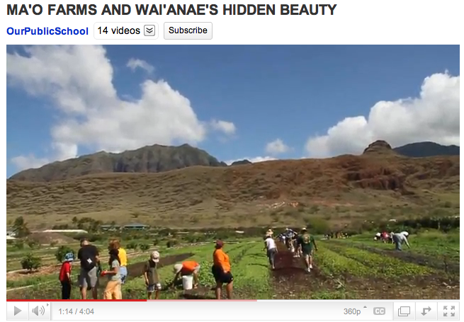

Can you see HĀloa as an older brother who wants to give your students a hand?
1. Assess if your school has a Hawaiian studies curriculum. In what ways can this site's resources strengthen the students’ experience?
2. Can this material support the Curriculum Concepts you plan to teach about science or sustainability? Assess how this kalo website can be integrated into curriculum besides Hawaiian studies, into other subjects such as life science, history, economics, environmental studies, etc.
3. View this video, Alice Waters and the Edible Schoolyard, min. 4:00. By ChronicleBooks. Link to Youtube.com. It features the Edible Schoolyard garden raised at Martin Luther King, Jr. middle school in Berkeley as a tool for food, science and health education.
Credit: image from Alice Waters and the Edible Schoolyard posted on Youtube.
4. Assess what your students know about kalo (taro).
5. Assess what their experiences have been with eating kalo corms and leaves.
6. Identify kupuna, parents or people in the community that could be guest speakers about kalo in Hawaiian culture, agriculture, science, or nutrition and health.
7. Identify botanical gardens or kalo farm that could host a field trip / work day, or be asked to share huli, kalo planting material.
8. If you will plant, identify a garden plot. Identify resources that can donate or loan tools, soil, planting material and compost. Remember Kalo matures in 8 – 9 months. Recommend as a planting guide the book, Taro Mauka To Makai, College of Tropical Agriculture & Human Resources. Page 29. Link to CTAHR.hawaii.edu.
9. View this video, Ma‘o Farms and Wai‘anae's Hidden Beauty, min. 4:04. By OurPublicSchool.org. Link to Youtube.com. It features Ma‘o Farms, a community-based, nonprofit organization that addresses the critical areas of need: keeping youth in school, sustainable economic development, agriculture, health, and Hawaiian culture.

Credit: image from Ma‘o Farms and Wai‘anae's Hidden Beauty posted on Youtube.